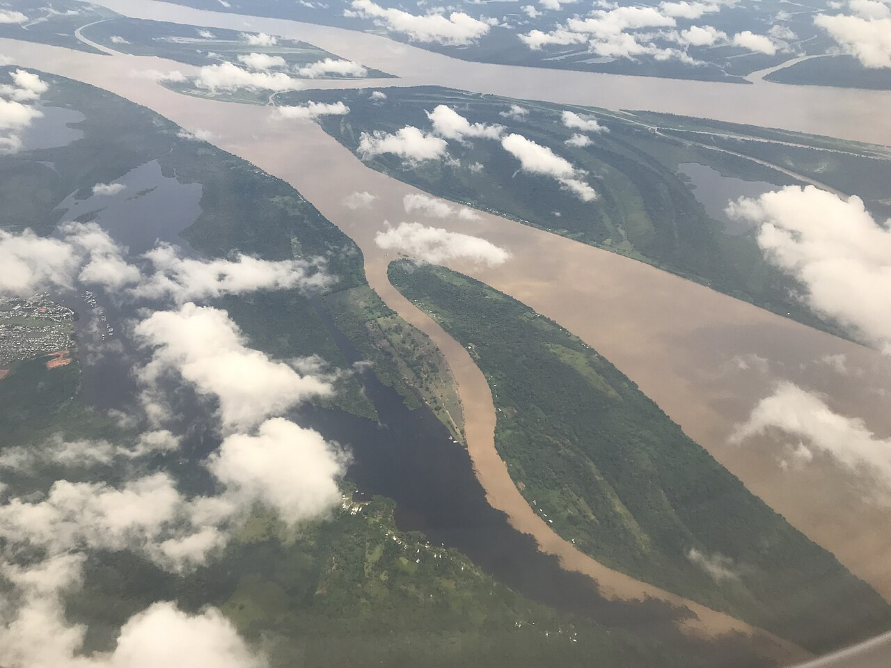
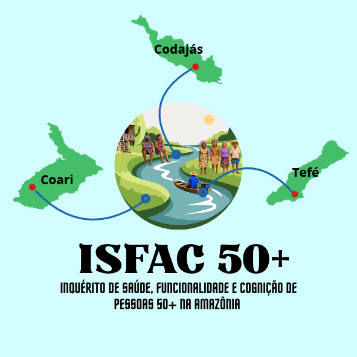

Saúde
Condições de saúde e como as pessoas percebem a própria saúde.
Projeto de pesquisa · Amazonas
Um estudo sobre saúde, funcionalidade e cognição de pessoas com 50 anos ou mais em Coari, Tefé e Codajás.
A pesquisa
O ISFAC 50+ é um inquérito epidemiológico que busca conhecer as condições de saúde, a capacidade de realizar atividades do dia a dia e aspectos da cognição de pessoas com 50 anos ou mais na região do Médio Solimões.
Inquérito de Saúde, Funcionalidade e Cognição de Pessoas 50 Mais na Região do Médio Solimões no Interior do Amazonas: Um Estudo Epidemiológico.

Temas da pesquisa
Condições de saúde e como as pessoas percebem a própria saúde.
Capacidade de se locomover e realizar atividades do cotidiano.
Habilidades como memória e atenção, presentes nas tarefas do dia a dia.
Perguntas frequentes
É um tipo de estudo que reúne informações sobre uma população para entender com que frequência certas condições de saúde ocorrem e como elas se distribuem entre diferentes grupos.
O estudo tem como foco pessoas com 50 anos ou mais nos municípios de Coari, Tefé e Codajás, no Médio Solimões.
Esses três aspectos ajudam a entender como a saúde, a capacidade de realizar atividades do dia a dia e habilidades como memória e atenção se relacionam no envelhecimento.
Logomarca
A logomarca do ISFAC 50+ representa a identidade amazônica e o percurso da pesquisa até as comunidades do interior do Amazonas.

Instituições
Ellem Nara Tananta Dantas foi aprovada em primeiro lugar no Edital nº 011/2026 da FAPEAM. Segundo o anúncio do projeto, ela será a primeira pesquisadora mestra vinculada ao PROFIX-RH a desenvolver pesquisa científica no interior do Amazonas. O estudo contribui para ampliar a produção científica no interior e dar visibilidade às necessidades de saúde da população do Médio Solimões.